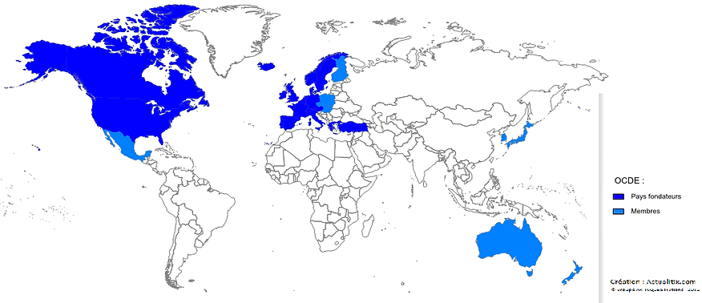

QUELQUES MOTS SUR L'ÉVÉNEMENT
Pour célébrer le mois de la Francophonie, le lycée Kölcsey Ferenc de Budapest a le grand plaisir d'organiser une simulation d'ampleur nationale à destination des lycéens (17/18 ans, en section bilingue ou renforcée, niveau B2) et des étudiants francophones (niveau B2 minimum).
Après avoir proposé les années précédentes des simulations autour des Nations Unies, de l'OSCE et de l'OIF, nous aimerions en 2020 sensibiliser les élèves et étudiants aux problématiques de l'Organisation de coopération et de développement économiques (OCDE), et plus particulièrement au suite de la pandémie

Les objectifs de cette simulation sont de :
- faire découvrir l’OCDE à un public francophone,
- mieux faire connaitre les objectifs de l’OCDE,
- permettre une prise de parole en français en contexte officiel,
- promouvoir la langue française et la francophonie,
- créer un événement pour dynamiser le réseau des sections bilingues et renforcées en Hongrie, tout en impliquant les étudiants suivant un cursus scolaire ou universitaire en français.
CLIQUEZ POUR TÉLÉCHARGER LE VADÉMÉCUM SUR L'OCDE ET LE COVID
LE CONTEXTE DE LA SIMULATION
Voici le scénario qui sera proposé pour cette journée de simulation.
Depuis maintenant 2 ans, la pandémie de COVID frappe le monde entier. Il semble que les premiers signes du passage du pic de la pandémie arrivent enfin. L’OCDE a donc décidé d’organiser une conférence internationale pour coordonner la relance économique dans différents pays, membres ou non de cette institution internationale.
Chaque équipe de 2 personnes (représentant un pays imaginaire) devra:
- envoyer un memento écrit (500 mots environ) sur leur situation intérieure de leur pays avant le 25 février 2022,
- faire une présentation orale de la situation de leur pays en séance pleiniére,
- réagir en conférence de presse aux différentes annonces lors de la conférence pleiniére.
CE QU'IL FAUDRA FAIRE
Chaque équipe (composée de deux personnes du même établissement) incarnera un pays imaginaire avec une situation sanitaire et des problémes économiques spécifiques. Les participants recevront une fiche descriptive de leur pays avant le concours pour se préparer.
les équipes devront choisir un pays imaginaire et recevront un dossier résumant less situation politique, sanitaire et économique du pays.
Sur cette base, les participants devront:
- Rédiger un mémento d’environ 500 mots. Le mémento devra être envoyé á l’adresse suivante (stephane.grandsire@kolcsey-bp.hu) avant le 25 février 2022, sera évalué sur des critéres langagiers (vocabulaire, cohérence du discours, grammaire, reprise des éléments du dossier préfourni, créativité,…). Les mémentos seront mis en ligne sur le site de l’événement.
- Faire une intervention orale sur la situation politique, sanitaires et économiques du pays (maximum 5 minutes).
- Réagir en conférence de presse l’aprés-midi - devant des journalistes - sur les différentes annonces faites durant la conférence du matin. (maximum 5 minutes, minimum 3 minutes)
L'évaluation des candidats sera triple :
- Le mémento sera évalué
- Le jury évaluera également les productions orales du matin sur des critères langagiers (vocabulaire, cohérence du discours, grammaire, prononciation) pour les trois catégories (classe bilingue, classe renforcée, université). Á noter : les participants voteront pour le discours du matin qu'ils pensent être le meilleur (vote du public),
- Le jury évaluera également les productions orales de l’aprés midi sur des critères langagiers (vocabulaire, cohérence du discours, grammaire, prononciation) pour les trois catégories (classe bilingue, classe renforcée, université).